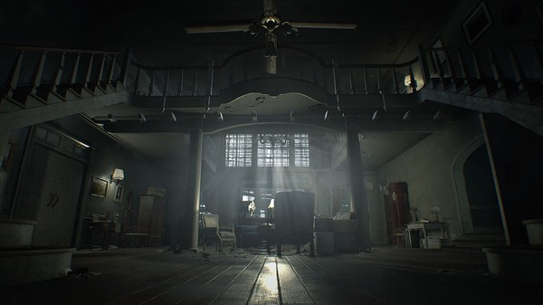
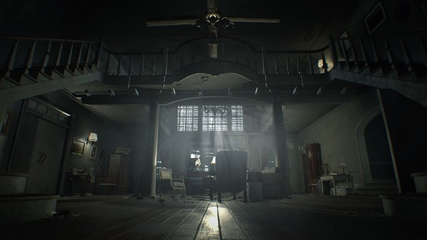
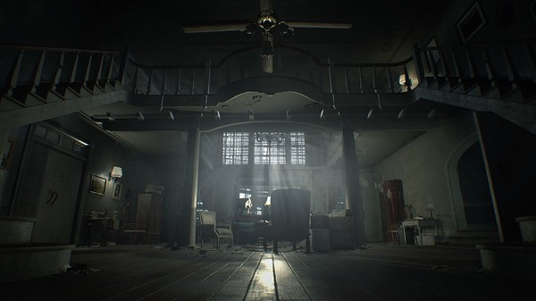

Login:
Senha:
Não possui uma conta?
Cadastre-se Aqui!
Home
|
Jogos
|
Galeria
|
Parceiros
|
Sobre
Resident Evil 7: Biohazard
Medo e isolamento se infiltram nas paredes de uma casa de campo abandonada. "7" marca um novo início para o horror de sobrevivência com a “Visão Isolada” da visceral perspectiva em primeira pessoa.Resident Evil 7 biohazard é o próximo grande lançamento da renomada série Resident Evil e cria um novo curso para a franquia ao trazer à tona suas raízes e abrir a porta pra uma experiência de horror realmente aterrorizante. Uma mudança dramática na série para uma visão em primeira pessoa em um estilo fotorrealista, gerido pelo novo RE Engine da Capcom, Resident Evil 7 traz um nível de imersão sem precedentes que torna a trama de horror mais próxima e pessoal. Passado na área rural dos Estados Unidos atualmente e após os dramáticos eventos de Resident Evil® 6, jogadores vivenciam o terror diretamente em uma perspectiva de primeira pessoa. Resident Evil 7 incorpora os elementos de exploração e a atmosfera tensa que são marca registrada da série e que criaram o "sobrevivência ao terror" cerca de vinte anos atrás. Enquanto isso, uma atualização completa dos sistemas de jogo simultaneamente impulsionam a experiência do sobrevivência ao terror a um próximo nível.
Parceiro
Imagens

Colaboradores
Jacob Jordan
Diretor Geral
Asuna Yuki
Diretora de Som
Nakushina Nakaraki
Programadora
James Oxford
Programador de som
©
2017 Valve Corporation. Todos os direitos reservados. Todas as marcas são propriedade dos seus respectivos donos nos EUA e em outros países.

 
©
2017 Valve Corporation. Todos os direitos reservados. Todas as marcas são propriedade dos seus respectivos donos nos EUA e em outros países.

©
2017 Valve Corporation. Todos os direitos reservados. Todas as marcas são propriedade dos seus respectivos donos nos EUA e em outros países.